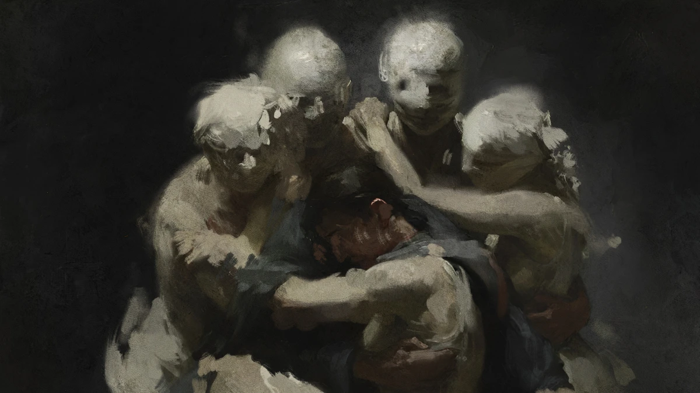
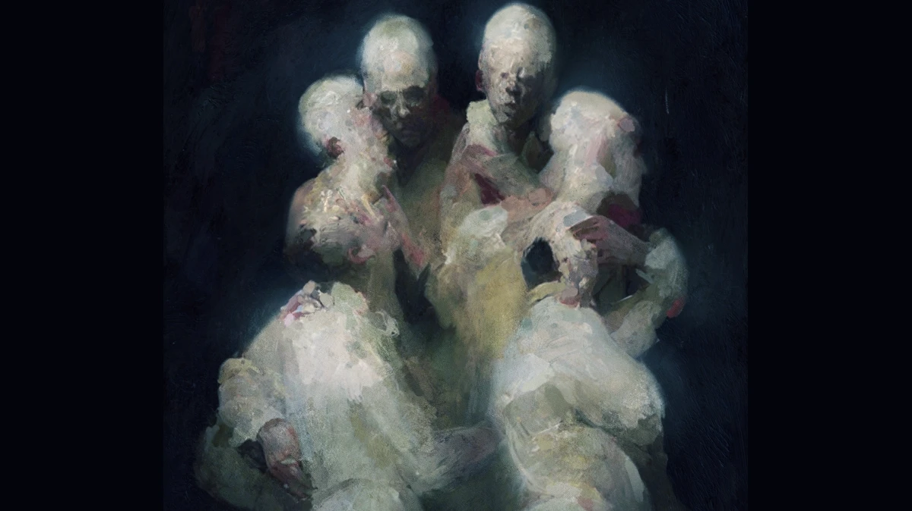

There is no one here. There is nothing to elevate, nothing to heal.
The truth is implacable. Everything that happens is governed by blind necessity.

The Universe is not benevolent or hostile: It is neutral.

This is not nihilism. We are the Field: amoral Consciousness.
Art does not heal. It holds up the implacable mirror of our illusion.
‹
›
"I consider technical skill a precious medium, but not the ultimate end. To me, painting becomes art the moment technique is placed at the service of profound content; without an idea to guide it, the risk is that it remains an exercise in style, a craftsman’s mastery that communicates nothing but execution skills.
If I have nothing to say through art, then I prefer to say nothing at all.
This gallery is not a commercial space. Nothing is for sale. My paintings are the necessary completion of my reflections: if I could do without them, I would, but I cannot. What I see and what I dream, I must record in the most direct way, because the image penetrates deeper than sound."
Michele
[ OK ] Mobile device detected.
Please return from desktop for the best experience